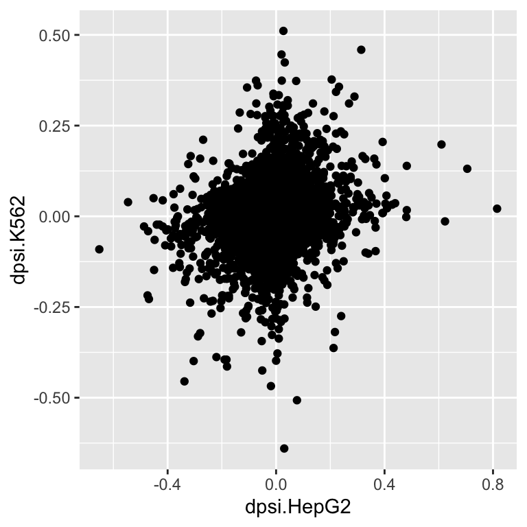
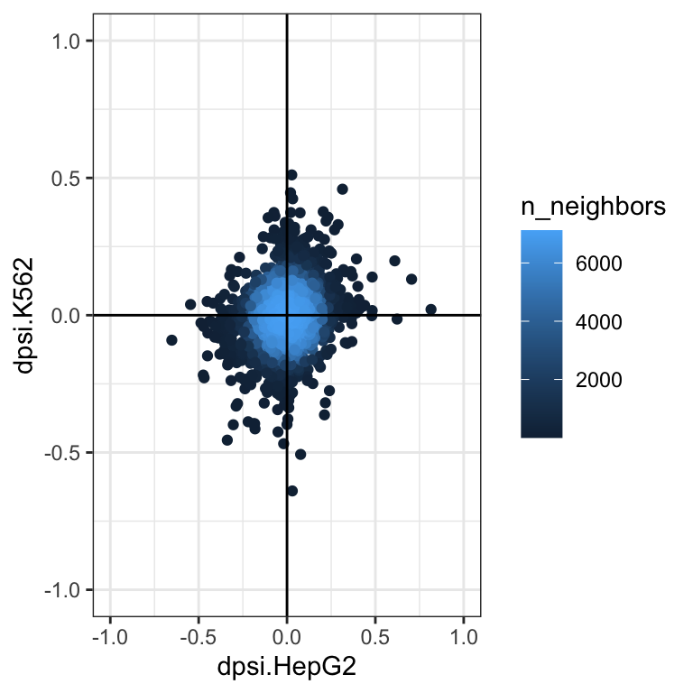

library(dplyr) # to easily handle data.frames
library(knitr) # beautiful tables
library(ggplot2) # nice plots
library(ggpubr) # for even more nice plots
library(eulerr) # for venn diagrams
library(ggpointdensity)Comparison of alternative splicing in two data sets
Introduction
Now we want to compare the alternative splicing found in the two analysed data sets.
Preparation
Required packages
Load splicing results
First we load the data.frames from the global analysis of both data sets.
# data.frames containing all junctions per LSV
HepG2 <- readRDS("/Users/melinaklostermann/Documents/projects/students/majiq-course/spezi_scripts_website/example_data/SFPQ_HepG2.rds")
K562 <- readRDS("/Users/melinaklostermann/Documents/projects/students/majiq-course/spezi_scripts_website/example_data/SFPQ_K562.rds")
# data.frames containing the highest junction per LSV
HepG2_highest_junction <- readRDS("/Users/melinaklostermann/Documents/projects/students/majiq-course/spezi_scripts_website/example_data/SFPQ_HepG2_highest_junction.rds")
K562_highest_junction <- readRDS("/Users/melinaklostermann/Documents/projects/students/majiq-course/spezi_scripts_website/example_data/SFPQ_K562_highest_junction.rds")Comparison of the dpsi of the strongest regulated junction
Now we combine both data sets with all junctions per LSV into one data set with double the number of columns. The columns get the ending .HepG2 or .K562 to distingish which values come from which data set.
We then remove junctions that were only detected in one of the two data sets. And again select the highest junction per LSV.
combined_lsvs <- full_join(HepG2, K562, by = c("lsv_id", "junction_coord"), suffix = c(".HepG2", ".K562"))
combined_lsvs# A tibble: 41,192 × 22
# Rowwise:
gene_name.HepG2 seqid.HepG2 strand.HepG2 lsv_id complex.HepG2 junction_coord
<chr> <chr> <chr> <chr> <chr> <chr>
1 CHCHD6 chr3 + ENSG00… False 126733222-126…
2 CHCHD6 chr3 + ENSG00… False 126733222-126…
3 ZNF181 chr19 + ENSG00… False 34739268-3473…
4 ZNF181 chr19 + ENSG00… False 34739268-3473…
5 NT5C2 chr10 - ENSG00… True 103100964-103…
6 NT5C2 chr10 - ENSG00… True 103100943-103…
7 PDCD11 chr10 + ENSG00… False 103439868-103…
8 PDCD11 chr10 + ENSG00… False 103439868-103…
9 PDCD11 chr10 + ENSG00… False 103441975-103…
10 PDCD11 chr10 + ENSG00… False 103441975-103…
# ℹ 41,182 more rows
# ℹ 16 more variables: ctrl_median_psi.HepG2 <dbl>,
# cond_median_psi.HepG2 <dbl>, dpsi.HepG2 <dbl>,
# probability_changing.HepG2 <dbl>, class.HepG2 <chr>,
# unique_juction_id.HepG2 <chr>, gene_name.K562 <chr>, seqid.K562 <chr>,
# strand.K562 <chr>, complex.K562 <chr>, ctrl_median_psi.K562 <dbl>,
# cond_median_psi.K562 <dbl>, dpsi.K562 <dbl>, …# remove junction that are only in one data set
combined_lsvs <- combined_lsvs %>%
subset(!is.na(gene_name.HepG2)) %>%
subset(!is.na(gene_name.K562))
# select highest lsv
combined_lsvs <- combined_lsvs %>%
mutate(max_cond = max(abs(dpsi.HepG2), abs(dpsi.K562))) %>%
group_by(lsv_id) %>%
arrange(max_cond, .by_group = T) %>%
slice(1)We can now use this data.frame to plot the dpsi values of both data sets against each other.
# basic plot
ggplot(combined_lsvs, aes(x = dpsi.HepG2, y = dpsi.K562))+
geom_point()
# plot with lines for 0
# the axis end are determined with coord_catesian
ggplot(combined_lsvs, aes(x = dpsi.HepG2, y = dpsi.K562))+
geom_point()+
geom_hline(yintercept = 0)+
geom_vline(xintercept = 0)+
coord_cartesian(xlim = c(-1,1), ylim = c(-1,1))+
theme_bw()# using a point_density to see were most points are located
ggplot(combined_lsvs, aes(x = dpsi.HepG2, y = dpsi.K562))+
ggpointdensity::geom_pointdensity()+
geom_hline(yintercept = 0)+
geom_vline(xintercept = 0)+
coord_cartesian(xlim = c(-1,1), ylim = c(-1,1))+
theme_bw()
# mark dpsis significant in both data sets
combined_lsvs <- combined_lsvs %>%
mutate( both_sign = (probability_changing.HepG2 > 0.9) & (probability_changing.K562 > 0.9))
sig_combined_lsvs <- combined_lsvs %>% subset(both_sign == TRUE)
ggplot(combined_lsvs, aes(x = dpsi.HepG2, y = dpsi.K562))+
geom_point()+
geom_point(data = sig_combined_lsvs, aes(x = dpsi.HepG2, y = dpsi.K562), color = "blue")+
geom_hline(yintercept = 0)+
geom_vline(xintercept = 0)+
coord_cartesian(xlim = c(-1,1), ylim = c(-1,1))+
theme_bw()# plot only dpsis significant in both data sets
ggplot(sig_combined_lsvs, aes(x = dpsi.HepG2, y = dpsi.K562))+
geom_point()+
geom_hline(yintercept = 0)+
geom_vline(xintercept = 0)+
coord_cartesian(xlim = c(-1,1), ylim = c(-1,1))+
theme_bw()Venn diagram of regulated LSVs between the comparisons
Now that we have seen that there is a substantial amount of regulated LSVs in the two comparisons, we want to find out how many of them are shared between the two comparisons.
We first extract for both data sets the LSV identifiers of the significant LSVs.
combined_lsvs_sign_in_one <- combined_lsvs %>%
subset((probability_changing.HepG2 > 0.9) | (probability_changing.K562 > 0.9))Next, we make a venn diagramm using the eulerr package. For this we first collect all LSV IDs of LSVs that are significant in at least one of the data sets. Then we create a data frame with the information which of the LSVs was significant in which data set.
We can then use this data frame to caluclate and plot the venn diagramm. In the diagram the area in the circles is proporitional to the number of lsvs in each circle.
overlaps <- data.frame( "HepG2" = combined_lsvs_sign_in_one$probability_changing.HepG2 > 0.9,
"K562" = combined_lsvs_sign_in_one$probability_changing.K562 > 0.9 )
head(overlaps) HepG2 K562
1 TRUE FALSE
2 TRUE FALSE
3 TRUE FALSE
4 TRUE FALSE
5 TRUE FALSE
6 TRUE FALSEvenn <- eulerr::euler(overlaps)
plot(venn, quantities = TRUE, fontface = 1)Here we can see only a small number of LSVs is regulated in both data sets, while the vast majority is only regulated in only one of the two comparisons.
Session info
sessionInfo()R version 4.3.3 (2024-02-29)
Platform: x86_64-apple-darwin20 (64-bit)
Running under: macOS Ventura 13.1
Matrix products: default
BLAS: /Library/Frameworks/R.framework/Versions/4.3-x86_64/Resources/lib/libRblas.0.dylib
LAPACK: /Library/Frameworks/R.framework/Versions/4.3-x86_64/Resources/lib/libRlapack.dylib; LAPACK version 3.11.0
locale:
[1] en_US.UTF-8/en_US.UTF-8/en_US.UTF-8/C/en_US.UTF-8/en_US.UTF-8
time zone: Europe/Berlin
tzcode source: internal
attached base packages:
[1] stats graphics grDevices datasets utils methods base
other attached packages:
[1] ggpointdensity_0.1.0 eulerr_7.0.2 ggpubr_0.6.0
[4] ggplot2_3.5.1 knitr_1.47 dplyr_1.1.4
loaded via a namespace (and not attached):
[1] gtable_0.3.5 jsonlite_1.8.8 compiler_4.3.3 ggsignif_0.6.4
[5] renv_1.0.7 Rcpp_1.0.12 tidyselect_1.2.1 tidyr_1.3.1
[9] scales_1.3.0 yaml_2.3.8 fastmap_1.2.0 R6_2.5.1
[13] labeling_0.4.3 generics_0.1.3 backports_1.5.0 polyclip_1.10-6
[17] tibble_3.2.1 car_3.1-2 munsell_0.5.1 polylabelr_0.2.0
[21] pillar_1.9.0 rlang_1.1.4 utf8_1.2.4 broom_1.0.6
[25] xfun_0.44 cli_3.6.2 withr_3.0.0 magrittr_2.0.3
[29] digest_0.6.35 grid_4.3.3 rstudioapi_0.16.0 lifecycle_1.0.4
[33] vctrs_0.6.5 rstatix_0.7.2 evaluate_0.24.0 glue_1.7.0
[37] farver_2.1.2 abind_1.4-5 carData_3.0-5 fansi_1.0.6
[41] colorspace_2.1-0 rmarkdown_2.27 purrr_1.0.2 tools_4.3.3
[45] pkgconfig_2.0.3 htmltools_0.5.8.1